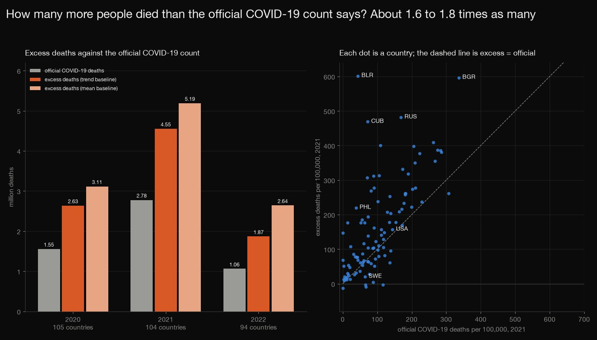
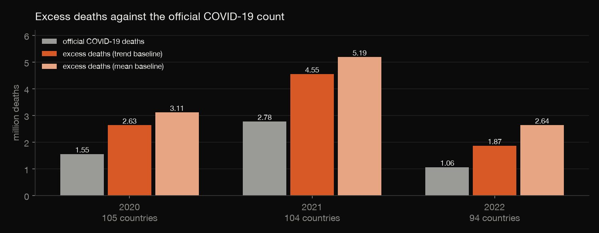
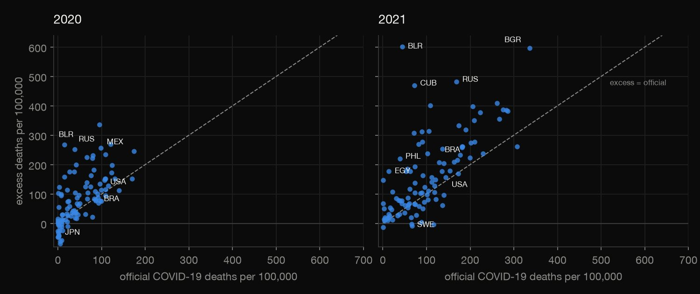
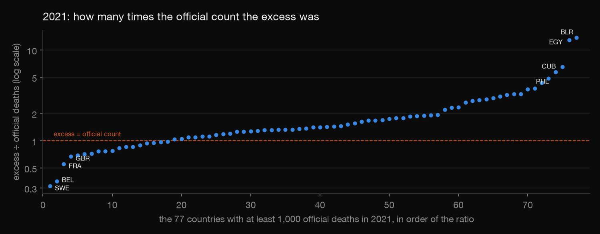
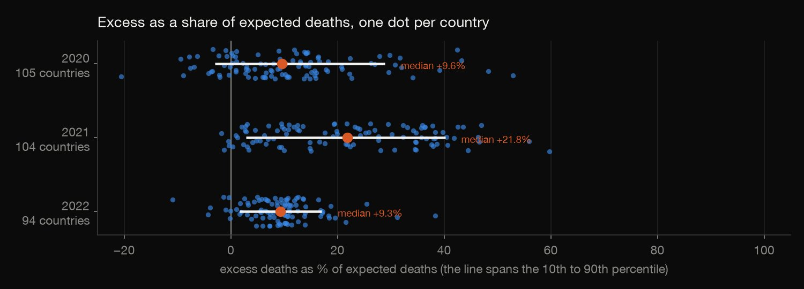

Python · Regression · 2026-10
How Many More Died Than the COVID-19 Count Says?
Across 105 countries, deaths from all causes in 2020 were 2.6 million above what the 2015–2019 trend predicts, against 1.55 million official COVID-19 deaths; in 2021 the gap was 4.6 million against 2.8 million, a ratio of about 1.6 to 1.8 that holds on a fixed panel, with five countries carrying half the 2021 total.

Excess deaths are all deaths above an extrapolated baseline, not COVID-19 deaths: they include unrecorded COVID-19 deaths and deaths from interrupted care, and net off deaths that did not happen. The baseline is a line through four or five points, so its interval is wide, and the plain mean baseline gives 18% to 41% more excess. The 128 countries leave out China, India and most of Africa and South Asia, so the ratio of about 1.7 is for these countries, not the world, and a few large countries dominate the totals.
01 — The problem
Countries count COVID-19 deaths in different ways, and many missed some. A cleaner measure is excess mortality: how many more people died, from any cause, than a pre-pandemic trend predicts. How many more died than the official count says, does the answer depend on the baseline, and where was the gap largest?
The questions follow GeeksforGeeks' "Global Covid-19 Data Analysis and Visualizations", narrowed to what the official counts left out. The data is the World Mortality Dataset (all-cause deaths in 128 countries) and the Johns Hopkins counts: real and public, not a course file.
02 — What I built
Three public files, audited and analysed:
- Audit and eligibility: which country-years are complete, which countries can be matched, and which have a usable baseline.
- Expected deaths: a trend through each country's death rates, with a prediction interval.
- Against the official count: totals, ratios, countries beyond their interval, P-scores and the concentration in a few countries.
- Check:
check.pyrecomputes 5,675 numbers from the raw files, with every country's trend line written out by hand.
03 — How it was built
- 01
Download three files
The World Mortality Dataset (weekly or monthly deaths from all causes, MIT licence), and the Johns Hopkins global deaths time series with its country table (CC BY 4.0). They are 2.8 MB together and the first is updated by its authors, so the exact copies are committed with their checksums.
- 02
Audit and eligibility
128 countries and territories report weekly or monthly deaths from 2015 to 2024. A country-year counts only if it is complete: all 12 months, or weeks 1 to 52 (or 53) with none missing. Twelve Fiji rows labelled year 0 are dropped, 16 territories that Johns Hopkins reports inside another country cannot be matched, and a country needs four complete baseline years including 2019. 105, 104 and 94 countries qualify in 2020, 2021 and 2022.
return matched[i] and len(base_years[i]) >= 4 and 2019 in base_years[i] and y in comp.columns and bool(comp.loc[i, y]) - 03
Expected deaths from a daily-rate trend
A straight line through each country's baseline death rates (deaths per day, so the 53-week years 2015 and 2020 do not count an extra week), extended to the year and multiplied by its days. The 95% prediction interval is the usual one for a line through n points. The plain mean rate is the alternative baseline.
pr = b + k * (y - xm); half = stats.t.ppf(0.975, n - 2) * sd * np.sqrt(1 + 1 / n + (y - xm) ** 2 / sxx) * dd - 04
Set it against the official count
Official deaths are the change in Johns Hopkins' cumulative count between 31 December of the previous year and 31 December of the year, summed over provinces. The page compares totals, ratios, the countries whose excess is beyond their interval, and P-scores (excess as a share of expected).
rep = cum(name[i], f"{y}-12-31") - (cum(name[i], f"{y - 1}-12-31") if y > 2020 else 0.0); obs = s.loc[y, "deaths"]; et, em = pr * dd, rate.mean() * dd - 05
Recompute it from the raw files
check.pyrecomputes 5,675 numbers in plain Python straight from the three raw CSV files, with no pandas or numpy: which country-years are complete, every country's trend line and prediction interval written out by hand, expected and excess deaths, the official counts, the pooled totals, the quantiles and the summary.xs = base_years[i]; n = len(xs); rate = [info[(i, x)][2] / info[(i, x)][1] for x in xs]; xm = sum(xs) / n; rm = sum(rate) / n
04 — Results

| Year | n | Official | Excess | Ratio |
|---|---|---|---|---|
| 2020 | 105 | 1.55M | 2.63M | 1.69 |
| 2021 | 104 | 2.78M | 4.55M | 1.64 |
| 2022 | 94 | 1.06M | 1.87M | 1.76 |
1.6 to 1.8 times the official count. "n" is the number of eligible countries; "official" is Johns Hopkins' COVID-19 deaths for the year and "excess" is observed deaths minus the 2015–2019 trend. On the 94 countries eligible in all three years the ratios are 1.67, 1.63 and 1.76. Against the plain 2015–2019 mean the excess is 3.11, 5.19 and 2.64 million, and the ratios 2.00, 1.87 and 2.49: the mean ignores the upward trend of deaths in ageing populations, so it gives the larger figure.

| 2021 | Excess | Official | Ratio |
|---|---|---|---|
| United States | 517,154 | 474,864 | 1.09 |
| Russia | 703,010 | 246,400 | 2.85 |
| Brazil | 473,001 | 424,262 | 1.11 |
| Mexico | 323,765 | 173,621 | 1.86 |
| Philippines | 241,224 | 42,260 | 5.71 |
| Egypt | 181,299 | 14,121 | 12.84 |
| Belarus | 56,847 | 4,154 | 13.68 |
| Sweden | 2,075 | 6,583 | 0.32 |
| United Kingdom | 55,359 | 82,762 | 0.67 |
| France | 33,069 | 59,971 | 0.55 |
Country by country. Among countries with at least 100 official deaths, the excess is larger than the official count in 54 of 85 in 2020, 71 of 93 in 2021 and 67 of 83 in 2022. The table gives 2021, with the ratio of excess to official in bold where it is above 5 or below 0.5. Some countries had less excess than official deaths, and Japan's 2020 excess was negative (−32,233, against 3,492 official deaths).

Most of the world is above 1. In 2021 the median ratio is 1.43 (1.32 in 2020 and 1.60 in 2022). The extremes are Belarus (13.68) and Egypt (12.84) at the top, and Sweden (0.32), Belgium (0.36), France (0.55) and the United Kingdom (0.67) at the bottom.

Beyond chance. As a share of expected deaths the median country had +9.6% in 2020, +21.8% in 2021 and +9.3% in 2022, with an excess above zero in 81.9%, 96.2% and 91.5% of countries. The excess is above a country's own 95% prediction interval in 53 of 105 countries in 2020, 72 of 104 in 2021 and 42 of 94 in 2022, and below it in 4, 0 and 1.
A few countries carry the total. The five largest excesses are 56.3% of the pooled excess in 2020, 49.6% in 2021 and 45.4% in 2022; in 2021 they are Russia, the United States, Brazil, Mexico and the Philippines. The data cover 128 countries and territories; 16 cannot be matched because Johns Hopkins reports them inside another country, and 7 more never have enough complete years.
05 — What I'd do next
- Fit the baseline week by week, as the dataset's authors do, and see how much of the gap between methods is the baseline.
- Split by age, where the dataset's sources allow it, to see who the excess deaths were.
- Add vaccination and the timing of waves, to see where the excess came before and after the vaccines.